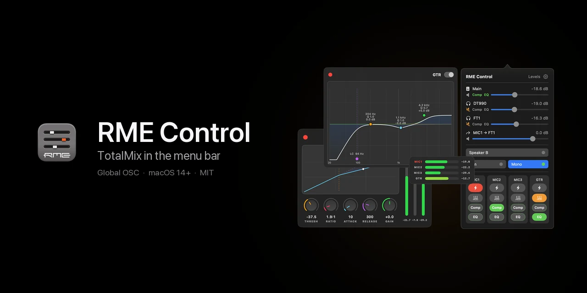

Close to the Mac.
Native windows, live audio, and models that run right here.
Swift 6
All three are Swift and C++ on AppKit. No browser inside.
Global OSC
RME Control talks to TotalMix FX 2.1 over the network, both ways.
Bluetooth LE
FLOW8 drives the mixer over the air, with no MIDI or USB.
On device
Meter runs the Essentia models itself and uploads nothing.